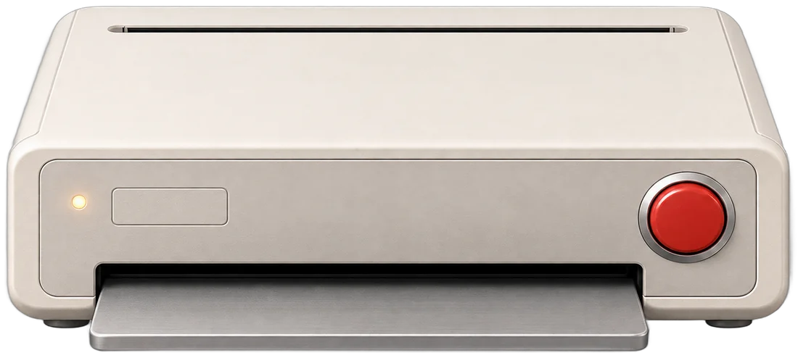

Printed to order
Who are you looking for?
I'm Chongbo Ning, a design engineer in London. Tell the machine who you're hiring, or paste the job description. It prints the parts of my work that match.
Lines to start from

Sent to the printer with these skills, so the AI and the keyword fallback both know what was asked: